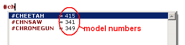
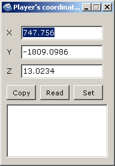

CODE tagPara que puedas copiarlo y pasarlo en Sanny, te recomiendo que lo hagas a menudo, te ayudara a comprenderlo. Y notendra que escribir el numero de codigo de operacion y presionar F1 cadavez.
Teclas de acceso directo:
Esta parte es la
mayoria de las partes repetidas de la Ayuda de Sanny, pero aveces se
explica de manera diferente.Pero aun puede informar a la pagina de
Hotkeys para mas detalles.
004F: create_thread @ODDVEo escriba thread y presione y vuelva a presionarlo, Sanny le sugerira todas esas lineas diferentes:
004E: end_thread 004F: create_thread @ODDVEH 00D7: create_thread_with_wasted_busted_check @NONAME_2 03A4: name_thread 'MAIN' 0459: end_thread_named 'INT' 004F: create_thread @ODDVEHEl F1 sera la clave que usara mucho, solo piense en lo que quiere (automovil,actor, punto de control, marcadores, arma,dinero,pintura, etc.) escribalo y presione F1.
Variables del editor:
Sanny puede completar
algo para usted como variables globales, etiquetas, ID demodelo, para
usarlo simplemente escriba elprimer caracter ($, @, o #) yobtenga lo que
necesita. Mira laanimacion, creo que explica bien:
Esos son los ejemplos mas utilizados, pero puede encontrar muchos usos
para esta herramienta.
Tenga en cuenta que con los modelos, se
muestra el numero de nude, por lo que es una forma bastante facil de
encontrar que numero es un modelo.

Generar Cordenadas:
Herramienta muy util
aqui que obtiene la posicion 3D del jugador. Por supuesto, el juego
deberia estar funcionando ...
La posicion de 3 dimensiones es el valor
de cada eje (x, y, z). El mapa de San Andreas va de -3000.0 a 3000.0
en los ejes x e y. La altitud (z) maxima de los aviones es de
aproximadamente 800.0 unidades.El eje x esta orientado hacia el este, el
valor de x aumenta al ir hacia el este. El eje y esta orientado
alsurnorte, el valor y aumenta cuando se dirige al norte. El centro
del mapa esta ubicado en 0.0 0.00.0 .
Bueno, parece que:

Esta captura de pantalla es de Sanny
Builder. El nuevo coordinador de coordinacion es ligeramente
diferente.
Copiar copiara en el portapapeles las posiciones 3d como
747.756 -1809.0986 13.0234
Leer actualizara la posicion del
jugador en el juego.
Set colocara al jugador en la posicion que haya
escrito en las tres dimensiones.
En el nuevo Sanny Builder
obtienes el valor del angulo Z. Este es el valor del angulo alrededor del
eje z, que significa en que direccionesta mirando el jugador (CJ). 0.0 es
norte, 180.0es sur, 90.0 es este, 270.0 es oeste.
004F: create_thread @ODDVEH 004F: create_thread @R3 004F: create_thread @GYM 004F: create_thread @SHOOT 004F: create_thread @BLOODR 004F: create_thread @HOTR 004F: create_thread @KICKS 004F: create_thread @PSAVE1 004F: create_thread @FLOW 004F: create_thread @HELP 004F: create_thread @COLLS 004F: create_thread @CRANES 004F: create_thread @BUY_PRO 004F: create_thread @VALET_L 004F: create_thread @ADPLANEEntre cualquiera de esas lineas, agregara:
004F: create_thread @modlabeldonde sera, por supuesto, el primer nombre de etiqueta del mod en lugar de modlabel .
//-------------Mission 0--------------- //Originally : Initial 1Luego compila y copia a San Andreas data\script (F7), inicia el juego, comienzaun nuevo juego y .....
0213: $myweaps00 = create_pickup #CHNSAW type 15 at -2083.0 298.0 42.0 0213: $myweaps01 = create_pickup #BAT type 15 at -2306.0 93.0 35.0 0213: $myweaps02 = create_pickup #SHOVEL type 15 at -2796.4 123.6 6.8 0213: $myweaps03 = create_pickup #POOLCUE type 15 at -2135.0 197.0 35.0 0213: $myweaps04 = create_pickup #KATANA type 15 at -2208.0 696.0 50.0 0213: $myweaps05 = create_pickup #BRASSKNUCKLE type 15 at -2206.0 961.0 80.0
00D6: if 0214: pickup $pickup00 picked_up 004D: jump_if_false @lavel
032B: $myweaps06 = create_weapon_pickup #NVGOGGLES type 15 ammo 1 at 299.5 -31.7 1001.0 032B: $myweaps07 = create_weapon_pickup #IRGOGGLES type 15 ammo 1 at 299.6 -41.3 1001.0 032B: $myweaps08 = create_weapon_pickup #M4 type 15 ammo 60 at 2021.8 1001.4 10.3 032B: $myweaps09 = create_weapon_pickup #MP5LNG type 15 ammo 12 at 2025.2 1001.4 10.3 032B: $myweaps10 = create_weapon_pickup #SHOTGSPA type 15 ammo 12at 2021.0 1013.3 10.3 032B: $myweaps11 = create_weapon_pickup #SATCHEL type 15 ammo 20 at 2023.7 1013.5 10.5 032B: $myweaps12 = create_weapon_pickup #SNIPER type 15 ammo 60 at -2035.7 139.4 28.3 032B: $myweaps13 = create_weapon_pickup #MICRO_UZI type 15 ammo 12 at -2038.4 139.6 28.3 032B: $myweaps14 = create_weapon_pickup #CHROMEGUN type 15 ammo 12 at -2038.6 137.4 28 032B: $myweaps15 = create_weapon_pickup #GRENADE type 15 ammo 20 at -2035.4 137.2 28.3 032B: $myweaps16 = create_weapon_pickup #AK47 type 15 ammo 12 at 2499.3 -1707.4 1014 032B: $myweaps17 = create_weapon_pickup #TEC9 type 15 ammo 12 at 2499.5 -1709.6 1014 032B: $myweaps18 = create_weapon_pickup #SAWNOFF type 15 ammo 60 at 2493.4 -1708.2 1014 032B: $myweaps19 = create_weapon_pickup #MOLOTOV type 15 ammo 20 at 2493.5 -1706.8 1015 032B: $myweaps22 = create_weapon_pickup #COLT45 type 15 ammo 10 at -365.4 -1422.4 25.5 032B: $myweaps23 = create_weapon_pickup #FLAME type 15 ammo 20 at -366.0 -1418.6 25.5Bueno para aquellos, el numero despues de municiones la cantidad de municion que tendras cuandorecojas el arma.
0215: destroy_pickup $myweaps014. Hilos:
004F: create_thread @name_of_your_threadUsted lo nombra con 03A4:
03A4: name_thread 'NAME'No mas de 7 letras
004E: end_threadO desde cualquier otro lugar con 0459:
0459: end_thread_named 'NAME'En algun momento puedes encontrar 004F extrañocomo:
0247: request_model #CHEETAHluego cargue los modelos solicitados con 038b:
0247: request_model #DESERT_EAGLE
038B: load_requested_modelsDespues de que necesite una verificacion para confirmar que los modelos estan realmente cargados (disponibles para que elmotor los use):
00D6: if and 0248: model #HEATSEEK availableEl salto si es falso salta a :LOOP_RQ_10 donde el modelo se solicitara nuevamente cargadonuevamente.
0248: model #DESERT_EAGLE available
0248: model #MP5LNG available
0248: model #CR_AMMOBOX available
0248: model #CHEETAH available
0248: model #WFYSEX available
004D:jump_if_false @LOOP_RQ_10
:LOOP_RQ_10Observe la espera porque es muy importante quehaga un ciclo, haga que el motor vuelva a estar donde estaba antes. Necesitas esperar, esperar 0 ms es suficiente, no necesitas mas, pero SI lo necesitas.
0001: wait 0
0247: request_model #WFYSEX
0247: request_model #CR_AMMOBOX
0247: request_model #CHEETAH
0247: request_model #DESERT_EAGLE
0247: request_model #MP5LNG
0247: request_model #HEATSEEK
038B: load_requested_models
00D6: if and
0248: model #HEATSEEK available
0248: model #DESERT_EAGLEavailable
0248: model #MP5LNG available
0248: model #CR_AMMOBOXavailable
0248: model #CHEETAH available
0248: model #WFYSEX available
004D: jump_if_false @LOOP_RQ_10
00A5: $car00 = create_car #CHEETAH at 2368.5601 1666.84 13.38
009A: $actor00 = create_actor 22 #WFYSEX at 2490.56 -1666.84 14.38
009A: $actor01 = create_actor 22 #WFYSEX at 2495.56 -1666.84 14.38
009A: $actor02 = create_actor 22 #WFYSEX at 2490.56 -1660.84 14.38
009A: $actor03 = create_actor 22 #WFYSEX at 2495.56 -1660.84 14.38
0107: $object00 = create_object #CR_AMMOBOX at 2502.5601 -1566.84 24.38
01B2: give_actor $actor00 weapon 36 ammo 900 //Cargar el modelo de esta arma antes de usarla
01B2: give_actor $actor01 weapon 29 ammo 900 //Cargar el modelo de esta arma antes de usarla
01B2: give_actor $actor02 weapon 24 ammo 300 //Cargar el modelo de esta arma antes de usarla
01B2: give_actor $actor03 weapon 29 ammo 900 //Cargar el modelo de esta arma antes de usarla
0175: set_car $car00 z_angle_to 90.0Es bastante facil asi que sere rapido:
0229: set_car $car00 color_to 11 0
0A11: set_car $car00 tertiary_color_to 6 quaternary_color_to 12
0174: $carangle = car $car00 z_angleBueno, ¿que puedo decir? Es lo mismo que antes, pero en todos los sentidos, en lugar de decir el motor para ponerle color al coche o ponerlo en esa direccion, encuentra el color del coche o la direccion del coche. es y poner el entero resultante en la variable.
03F3: get_car $car00 color $primcolor $scndcolor
0A12: get_car $car00 tertiary_color_to $tertcolor quaternary_color_to $quatcolor
0172: $actorangle = actor $actor00 z_angleLo mismo para los objetos, aqui esta el angulo, pero hay mas en los objetos que siguen:
0173: set_actor $actor00 z_angle_to 262.0
0176: $objangle = object $object00 z_angleCuando terminaste de usar esosactores/vehiculos/objetos, tienes dos formas diferentes de deshacerte de ellos:
0177: set_object $object00z_angle_to 180.0
00A6: destroy_car $car00034f como dice el comentario " //El actor se desvanece como unfantasma". Por logeneral,loque vesen eljuego original cuando un actor esta muerto,desaparece lentamente.
0108: destroy_object $object00
009B: destroy_actor_instantly $actor01
034F: destroy_actor_with_fade $actor00 // El actor se desvanece como un fantasma
01C2: remove_references_to_actor $actor00 //Como convertir a un actor en un peatonaleatorio
01C3: remove_references_to_car $car00 /*Al igual que convertir un automovil en cualquier autoaleatorio*/
01C4: remove_references_to_object $object00 //Este objeto ahora desaparecera cuando el jugador mire haciaotro lado
0249: release_model #WFYSEXSobre actores especiales:
0249: release_model #CR_AMMOBOX
0249: release_model #CHEETAH
0249: release_model #DESERT_EAGLE
0249: release_model #MP5LNG
0249: release_model #HEATSEEK
023C: request_special_actor 'TENPEN' as 1Aqui ha solicitado los modelos 'TENPEN' , 'PULASKI' y 'HERN' y los define como modelos especiales de actor enteros 1 ,2 y3 .
023C: request_special_actor 'PULASKI' as 2
023C: request_special_actor 'HERN' as 3
023C: request_special_actor 'CESAR'as 4
023C: request_special_actor 'JETHRO' as 5
023C: request_special_actor 'MADDOGG' as 6
Al crear actores, vea como el modelo se llama#SPECIAL01 y que se refiere al numero entero utilizado en 023C (request_special_actor). Luego, los modelos de actores especiales se nombran desde #SPECIAL01 a#SPECIAL10 .wait 0
00D6: if and
023D: special_actor 1 loaded
023D: special_actor 2 loaded
023D: special_actor 3 loaded
023D: special_actor 4 loaded
023D: special_actor 5 loaded
023D: special_actor 6 loaded
0248: model #COPCARLA available
004D: jump_if_false @check_1
00A5: 0@ = create_car #COPCARLA at 2431.609 -1254.061 22.8303
01C8: 1@ = create_actor 23 #SPECIAL01 in_car 0@ passenger_seat 0
0129: 2@ = create_actor 23 #SPECIAL02 in_car 0@ driverseat
01C8: 3@ = create_actor 23 #SPECIAL03 in_car 0@ passenger_seat 1
009A: 4@ = create_actor 23 #SPECIAL04 at 2436.609 -1254.061 22.830
009A: 5@ = create_actor 23 #SPECIAL05 at 2437.609 -1254.061 22.8303
009A: 6@ = create_actor 23 #SPECIAL06 at 2438.609 -1254.061 22.8303
023C: request_special_actor 'SMOKE' as 1Para liberar el modelo simplemente use 0296 con el modelo entero de actor especial, y destruya al actor con 009b, 034f o 01c2:
023C: request_special_actor 'TORINO' as 2
023C: request_special_actor 'SWEET' as 3
023C: request_special_actor 'TRUTH' as 4
023C: request_special_actor 'CESAR' as 5
023C: request_special_actor 'MADDOGG' as 6
023C: request_special_actor 'ZERO' as 4
0296: unload_special_actor 1
0296: unload_special_actor 2
0296: unload_special_actor 3
0296: unload_special_actor 4
0296: unload_special_actor 5
0296: unload_special_actor 6
009B: destroy_actor_instantly 0@
009B: destroy_actor_instantly 1@
009B: destroy_actor_instantly 2@
009B: destroy_actor_instantly 4@
009B: destroy_actor_instantly 5@
009B: destroy_actor_instantly 6@
00A6: destroy_car 3@
comportamiento del conductor
seguir camino / camino
"poner
en" methode
COMO drving
para avion / automoviles / barcos
carmods, conjunto de solicitudes,numeros
carparts, abrir / cerrar
rotura / reparacion
remolques adjuntar
Los neumaticos se inflan
desinflan
explosion del tanque de gas
las reglas de daño 03f5
reparar / reparar el componente 073c / 068a
10. Fuego, explosiones
e interiores:
Unincendio :
Humm Fire
... El agradable olor a plasticoquemado, hazme amadas las granadas por la
mañana. Pero primero pensemos en SEGURIDAD, necesitaremos un
retardante de fuego por siacaso:
:LABEL00
0001: wait 0 ms 0247: load_model #FIRE_EX 00D6: if 0248: modelo #FIRE_EX available 004D: jump_if_false @LABEL00 01B2: give_actor $PLAYER_ACTOR weapon 42 ammo 6000 //Carga el modelo del arma antes de usar este opcode
¡Con esto, usted (el jugador) tendra elextintor de incendios!
Primero, necesitas saber que los incendiospueden propagarse facilmente y
extinguirlos en el juego destruirlo en el motor de SCM, y que los
actores son inmunes al fuego, solo puedesestablecer fuego conel
codigo de operacion 0326, ellanzallamas o la explosion. Veamos
los codigos de operacion:
02CF: $fire00 = create_fire_at 1824.118 -2423.674 13.5547 propagation 7 size 8 0325: $fire01 = create_car $car00 fire
0326: $fire02 = create_actor $actor00 fire 06F5: create_coordinate $firepos_x $firepos_y $firepos_z from_fire $fire00 06C3: get_number_of_fires_within_sphere_at 1550.68 -1675.49 14.51 radio 1.2 store_to $firenumb 0786: get_number_of_fires_within_cube_cornerA 541.0 -1278.0 17.5 cornerB 536.0 -1275.0 31.5 store_to $firenumb 02D1: remove_fire $fire00 0980: extinguish_all_fires_at -973.759 1077.152 1350.399 radio 200.0 031A: remove_all_fires 055D: make_player $PLAYER_CHAR rire retardant 1
Donde $fire00 ,$fire01 y$fire02 son los tiradores de fuego.
Para 0325 $car00 es el automovil contra el que vamos a incendiar, si no
es a prueba de fuego, sedañara, y si no cambia, "damage_rules" (03f5)
puede explotar.
Mas o menos lo mismo ocurre con 0326,$actor00
sera incendiado y perdera salud si no se extingue.
Con 06f5, la
posicion tridimensional de$fire00 se guardara en $firepos_x
$firepos_y$firepos_z .
Tanto 06c3 como 0786 contaran los fuegos en
uncirculo o un cubo y lo almacenaran en $firenumb .
Todos
los 02d1, 0980 y 031a extinguiran elfuego en el juego y vaciaran la
variable del fuego $fire00 .
Finalmente, el 055d hara que el jugador
sea a prueba de fuego, como despues de terminar las misiones
secundarias del camion de bomberos. 1 eres a prueba de fuego,
0 NO lo eres.
B.Explosiones:
Olvidemos la
seguridad ahora y destruyamostodo:
020C: create_explosion_with_radius 0 at 1827.1169 -2415.7666 13.5547 0565: create_soundless_explosion_at 681.8004 -474.1063 15.5363 type 7 0948: create_explosion_at 870.1503 -25.3395 62.9589 type 11 camera_shake 5.0 0356: explosion_type -1 in_cube_cornerA 541.0 -1278.0 17.5 cornerB 536.0 -1275.0 31.5
Aqui las carrozas son las posiciones, la buenaidea aqui es usar numeros
aleatorios, y los numeros int 11 ,0 y 7
son el tipo de explosion.
Aqui hay una pequeña rutina para hacer
algunasexplosiones agradables:
:LABEL0001: wait 10 ms 00AA: store_car $car00 position_to %X %Y %Z
01BB: store_object $object00 position_to = 150
004D: jump_if_false @LABEL
Al cambiar 10 en la espera, las explosiones estaran mas espaciadas,
elija entre actor, automovil u objeto. Al cambiar los
numerosaleatorios, cambia el tamaño del area que golpeara. 150 es el
numero de explosiones. Que te
diviertas.
C.Interiores:
Hemos rediseñado la
biblia, hemos jugado con explosivos, asi que despues de desmayar
vamos al cielo donde hay comida rapida,tiendas, salones de
tatuajes, gimnasio, campo de tiro, Liberty City, casas de seguridad,
casinos, suites de hotel, Mansiones esperando nosotros !!!!!!
En
GTA San Andreas, toda la zona interior no se encuentra dentro de los
edificios, sino que estan en el cielo por encima del nivel maximo de
vuelo en un cielo mundial. En realidad, hay cielos multiples,
diecisiete de ellos. Para ser visibles y solidos actores,
automoviles, objetos y jugadores tienen que estar vinculados a
el, puede encontrar una lista de cielos y son numeros en los
contenidos de Ayuda deSanny Builder en SCM Documentacion: GTA SA:
GTA SAInterior . Hay muchas cosas que decirconinterior,
pero una simple busqueda en Google le dara mucha mas informacion
quenecesita.
Veremos aqui solo en el codigo de operacion:
04BB: select_interior 0 0860: link_actor $actor00 a_interior 6 0840: link_car $car00 a_interior 14 0566: link_object $object00 a_interior 1 077E: get_active_interior_to $interior00 09E8: $interior00 = actor $actor00 active_interior 04F9: set_interior 1 color_to 0 04FA: reset_interior 0 colores
Interior 0 no es interior, el mundo exterior normal. Los otros
numeros hasta 18 son interiores. 04bb es para la camara y el
reproductor, 0860 para actores como $actor00 , 0840 para automoviles y
0566 para objetos.
077e se usa para saber en que interior seencuentra el
jugador y guardarlo en $interior00 . 09e8 hace lo mismo con
$actor00 .
04f9 cambia el color de un interior y 04facambia el
interior a color normal.
11. Camaras y escenas
cinematicas de scm:
eres el director !!!!!
mover la
camara
camara en vehiculo / en actor mirando alvehiculo
tiro de
entrada y salida,
representacion interior al aire libre
usar
anims
omitir cutscenes
12. Textos y paneles:
paneles
cajas de texto
texto dibujado
gxt
13. Matematicas, estadisticas ytemporizadores:
variables y int y floats donde se puede usar float o int
puedes usar una variable que contenga float o int
+/-
* /
==
estadisticas
temporizador interno 32 @33 @
14.
Aleatoriedad y saltos de tabla:
Aleatorio
saltos de
mesa
15. Arrays:
16. Guiones de Misiones
y Externos:
starters mission / externals
Una mision a la
vez, muchas externas al mismo tiempo
rango local
Limpieza de la
mision
Conclusion
busqueda de codigo de
operacion ****
hacer experimentos
intente facil para comenzar
Imita el codigo existente
usa tu cerebro !!!
multiplicar
las fuentes de informacion
use la busqueda de google en el foro de
dominio gta, o la herramienta de busqueda gtaforum
haz una pregunta, hay un monton de chicos buenos (hola chicos
), hace mucho tiempo que era como vos, y alguien me ayudo
(gracias otra vez Dem), ahora estoy aqui escribiendo un
tutorial.
CReDITOS: cns (yo no estaria aqui sin el),Demarest (idem),
Seeman (¡el creo Sanny Builder!), PLPynton, ceedj, Y_less,PatrickW,
Gangsta Killa, Bigun, SteaVor, MatiDragon pero tambien
comocualquieraquien publico la descripcion de los codigos de operacion
(comoOpius,Spaceeinstein, Craig Kostelecky, DexX ...), y
cualquiera que me hayaayudado o me haya ayudado, asi como personas
que señalan los errores que hecometido en la Biblia, y tal vez
Tu.
pronto...